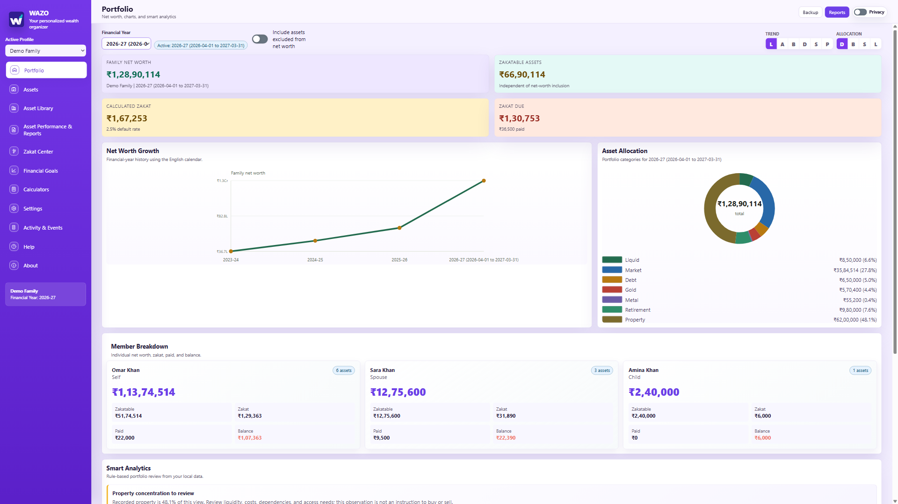
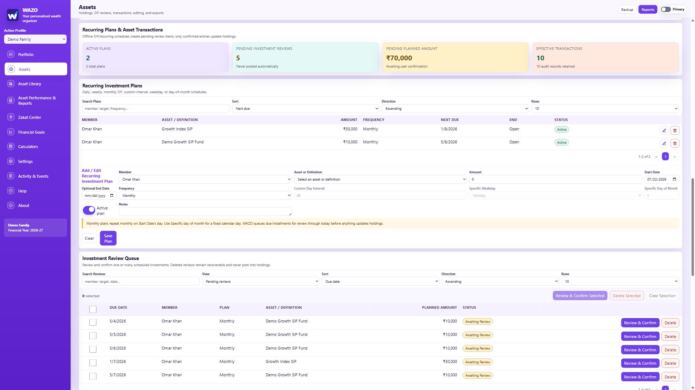
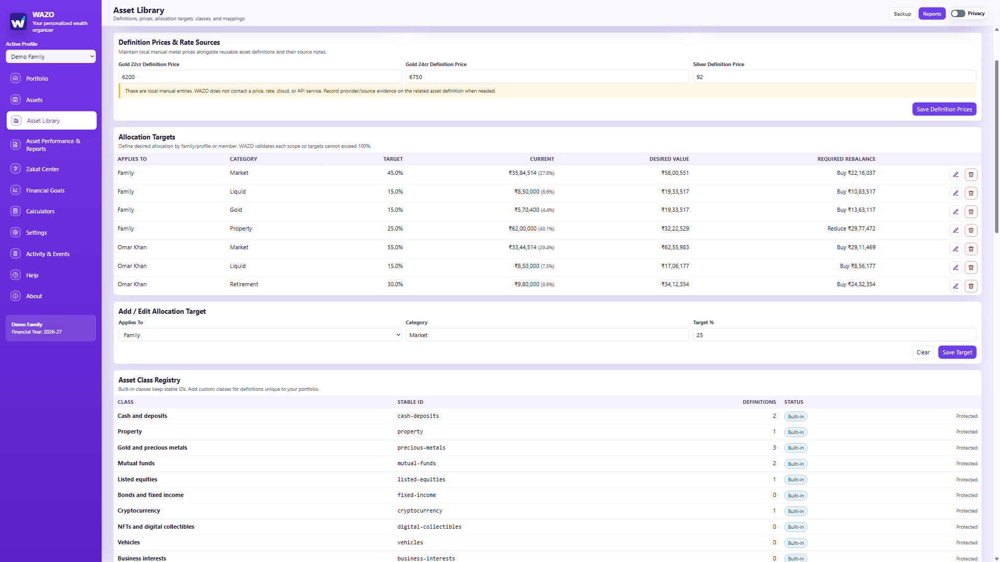
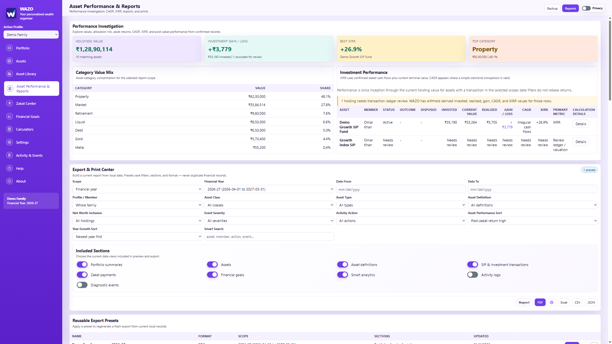
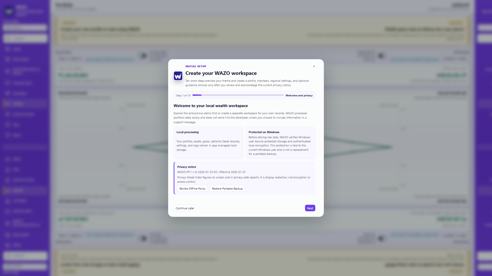

Fully offline wealth management for Windows
See your whole financial life, clearly.
WAZO brings family profiles, member-owned assets, recurring investments, goals, performance, reports, backups, and optional zakat into one private desktop workspace.
- Protected app-managed Windows data
- Family and member ownership
- Review-first investing
- Fully offline, local-only rates

1-minute product tour
See how WAZO brings your wealth together.
Meet the current WAZO 1.1.6 experience—from household net worth and recurring investments to reversible history, goals, reports, privacy, protected local storage, portable backups, and optional Zakat.
- English narration
- English captions
- 58 seconds
- Anonymous demo data
Current-version tour: This interface was recorded from WAZO 1.1.6 using an isolated anonymous demo profile. Privacy Mode is intentionally off so the app remains easy to understand.
A current WAZO 1.1.6 walkthrough with voiceover, captions, original music, and an isolated demo profile.
Read the complete English transcript
Meet WAZO, your personalized wealth organizer for Windows—one calm workspace for your household's financial picture.
See net worth, allocation, member ownership, and configurable financial years at a glance.
Keep holdings and transactions together. Record purchases, corrections, sales, or asset losses without erasing history.
For SIPs and recurring plans, WAZO prepares occurrences for review. Holdings change only after confirmation.
Reuse asset definitions, local prices, and allocation targets through the Asset Library.
Investigate gains, losses, CAGR, XIRR, calculation details, and export-ready reports.
Set goals, check household resilience, use local calculators, and optionally enable Zakat tools.
Privacy Mode conceals values, while protected local storage and portable backups keep you in control.
No account. No cloud. No telemetry. Your data stays on your device. WAZO—wealth, organized clearly.
Inside WAZO 1.1.6
Clear privacy choices. Fully offline protection.
The current Windows release puts acknowledgement before real data, protects app-managed records, and makes backup, recovery, and deletion choices explicit.
Privacy-aware first start
Complete a scroll-safe ten-step setup with an unchecked privacy acknowledgement, multiple family members, theme preview, configurable financial year, and optional first goal before creating a real profile.
Protected Windows storage
App-managed active data, settings, logs, transaction generations, and recovery points use authenticated encryption with a Windows-bound key.
Portable backup and recovery
Create an importable .wz backup with optional password protection for another device or Windows account, while protected automatic recovery guards day-to-day changes.
Safer existing-user migration
Existing users review the current policy before a backup-first protected migration. Exiting first leaves the earlier store unchanged.
Readable-output warning
WAZO explains when print or export creates a readable file outside protected app storage, while Privacy Mode keeps supported outputs structurally redacted.
Fully offline by design
Portfolio records, calculations, guidance, prices, and rates remain local. WAZO has no cloud storage, financial API, telemetry, synchronization, or background upload path.
The updated experience
Built around the work you actually do.
Each workspace has a distinct job, with less navigation and clearer decisions.

Assets + investments
One workspace for every asset.
Add a manual holding or start from a reusable definition. Create SIP and recurring plans, review generated occurrences, and confirm the transactions that should affect your portfolio.
- Member-owned assets roll up to the family profile
- Investment plans enable only relevant schedule fields
- Cost basis and holdings update after confirmation

Asset Library
Define once. Organize everything.
Use built-in or custom definitions for funds, equities, metals, crypto, property, cash, physical and digital assets, and anything unique to you.
- Prefill consistent names, types, and categories
- Set allocation targets up to a combined 100%
- Separate net-worth inclusion from other asset controls

Performance + reports
See what your wealth is doing.
Move from portfolio totals to asset-level investigation. Compare category mix, understand returns, and create a fresh output for the view you are analysing.
PDFPrintExcelCSVJSON

Private setup + protected storage
Your choices come before real data.
Privacy acknowledgement happens inside WAZO, not during installation. It is never preselected, and the app blocks real-data changes until setup is complete.
- Review the bundled policy without going online
- Continue Later keeps only the anonymous demo workspace
- Protected migration preserves supported v1.1.4 records
Everything that matters
Personal wealth is more than a balance.
WAZO keeps the surrounding context—ownership, goals, time, preferences, and protection—close to the numbers.
Profiles and members
Model a family or personal profile while preserving the real owner of every asset.
Configurable financial years
Use January-to-December, April-to-March, or a custom start for each workspace while protecting historical periods from accidental change.
Financial goals
Track progress toward FIRE, retirement, education, property, travel, and custom goals.
Currencies and formats
Choose your working currency and regional date and number format while the interface remains in English.
Local WAZO Guide
Get deterministic contextual help, navigation, and preview-before-confirmation guidance without cloud AI, prompt uploads, or saved chat history.
Optional zakat
Enable zakat planning when needed. Turn it off without deleting its saved data or affecting normal wealth tracking.
Structural privacy
Hide sensitive figures across the screen, preview content, accessibility surfaces, print, and export.
Backup and recovery
Create importable .wz backups with optional password protection and schedule Windows-bound protected recovery points while WAZO is open.
Activity and events
Review changes, warnings, diagnostics, and important app events in one combined history.
How it works
Start guided. Grow at your pace.
The new workflow handles a simple first holding just as comfortably as an active family portfolio.
- 01
Set up your profile
Follow the first-run guide for members, country, currency, regional format, financial year, and optional zakat.
- 02
Shape the Asset Library
Use ready definitions or create your own, then set category allocation targets where needed.
- 03
Add holdings and plans
Create assets directly or from the library, assign each owner, and add recurring investments.
- 04
Review pending activity
Inspect every due recurring occurrence before it becomes a confirmed transaction or changes a holding.
- 05
Analyse and rebalance
Study net worth, category mix, goals, gain or loss, CAGR, XIRR, and target gaps.
- 06
Protect and share
Create a portable backup, turn on Privacy Mode when needed, and export the exact report format you want.
Interactive example
Turn targets into a clearer next step.
Try the illustrative targets below. In WAZO, allocation targets live in the Asset Library and guide portfolio rebalancing.
Example only—not financial advice.
60%
15%
For existing WAZO users
Your setup moves forward with you.
WAZO 1.1.6 asks existing supported users for a one-time current-policy review before migration. The acknowledgement is not preselected. Exiting first leaves the prior store unchanged; a successful protected migration preserves supported profiles, members, assets, goals, settings, and values without data re-entry.
Downloads
Install the current public release.
Install the current WAZO release from the Microsoft Store or download the official Windows x64 installer.
About direct installer warnings
Windows SmartScreen or Chrome may warn that the standalone installer is from an unknown publisher because the direct installer is not yet code-signed. Only use this official page, verify the file name and SHA-256 hash, and choose More info → Run anyway only when those details match.
Recommended
Microsoft Store
WAZO listing
Install WAZO through Microsoft's managed Windows channel. If the listing is unavailable in your region, use the official direct installer beside it.
Current direct installer
WAZO v1.1.7
Build 1.1.7.0 · Windows x64
The fully offline Windows release with explicit in-app privacy choices, protected local storage, reversible records, configurable financial years, local guidance, and portable recovery.
SHA-2562DDEADC0D06E171DD7DB95B4D5038DAEB9CABE4BC7849A450EF9EEB2CEB906E1
Support
Tell us what you need.
Choose a template and your email app opens with the useful details already outlined.
Quick answers
Getting started with confidence.
Is the WAZO 1.1.6 installer available?
Yes. The current Windows x64 installer is available above and has passed the recorded automated source, startup, exact extracted-package, and current-display checks. It is not code-signed, so Windows may display an unknown-publisher warning.
What happens during first-time setup?
WAZO guides you through privacy information, country, regional format, profile, first member, financial year, currency, and optional zakat. The final privacy acknowledgement is not selected in advance and is required before a real workspace is created.
Do existing users need to enter their data again?
No. Existing v1.1.4 users complete a one-time, non-preselected privacy review before protected migration. Successful migration preserves supported profiles, members, assets, goals, settings, and values without re-entry.
Does WAZO work offline?
Yes. WAZO is fully offline. On Windows, WAZO 1.1.6 stores app-managed active data in authenticated encrypted envelopes with a Windows-bound key. Prices and rates are entered locally; there is no cloud storage, financial API, telemetry, synchronization, or automatic network lookup.
How do recurring investments affect holdings?
Due SIP or recurring occurrences appear for review. A holding and its cost basis update only after you confirm the occurrence, including every installment created from a backdated plan.
Where are allocation targets now?
Allocation targets are managed in the Asset Library, alongside reusable asset definitions. Combined targets are limited to 100%.
What can I export?
WAZO provides fresh PDF, print, Excel, CSV, and JSON outputs from its Export & Print Center and supported workspaces, including Assets and optional Zakat.
What does privacy mode protect?
Privacy mode removes sensitive values from visible screens, preview content, accessibility surfaces, print, and export rather than merely covering them with styling.
Is WAZO only for zakat users?
No. WAZO is a general personal wealth organizer. Zakat planning is optional, stays out of the interface when disabled, and can be re-enabled without deleting saved data.
Is WAZO freeware?
Yes. WAZO is intended as a free personal wealth organizer for local use, with no required subscription for the core Windows desktop app.